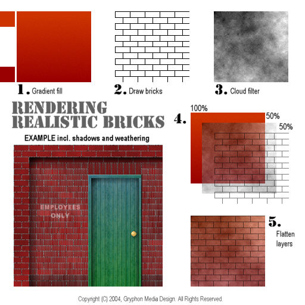

Rendering Realistic Bricks Tips
Menu
Steam4me Main Tutorial Index
SECTION INDEX
How to weather locomotive textures tutorial.
How to re-texture MSTS locomotive models - a Comprehensive Guide
A Beginner's Guide to avoiding problems building models with TSM
Building an Arch using TSM.

[
Top of Page
]
Copyrights © 2004-2007, Sean Lim. All Rights Reserved. Hosted courtesy of steam4me with permission.